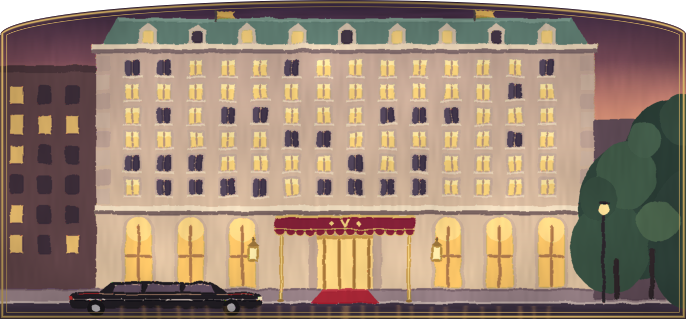

THE VANDERMEER
FIFTH AVENUE AT THE PARK, NEW YORK
In-Suite Dining
Served at any hour.
Dial 30 from your suite.
Dial 30 from your suite.
TO BEGIN
Jumbo shrimp cocktail
9.75Poached, chilled and peeled, on shredded iceberg with a rosy tomato mayonnaise, lemon and a dusting of paprika.
Blini with red caviar
14.00Warm buckwheat pancakes, crème fraîche, salmon roe and snipped chives.
FROM THE GRILL
Surf and turf
30.00An eight ounce filet mignon seared to your liking, a split lobster tail broiled in garlic butter, béarnaise on the side.
Club sandwich
8.75Triple decker of roast turkey, crisp bacon, lettuce and tomato on toasted white bread, with a pickle spear.
A 15% gratuity and a $1.50 tray charge are added to each check.
MORE OVERLEAF